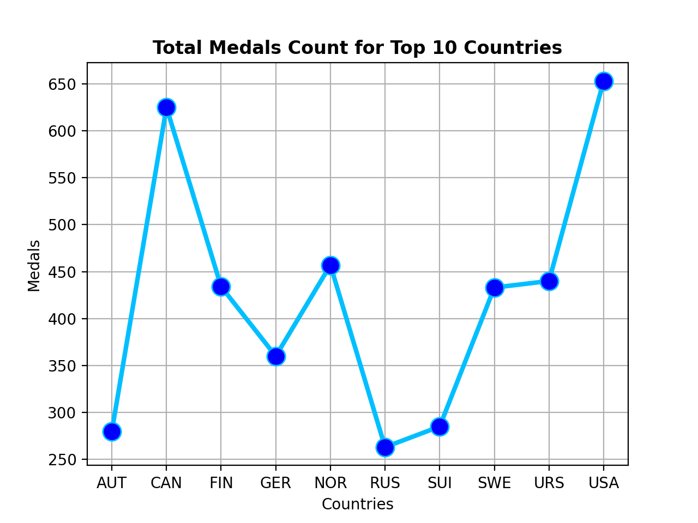
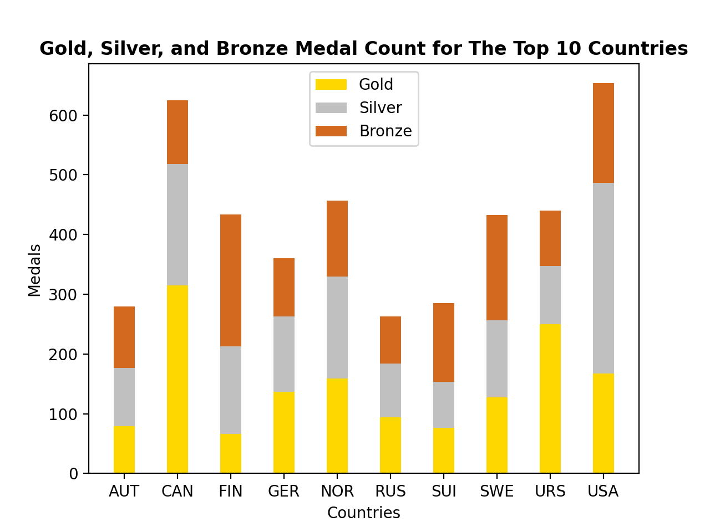
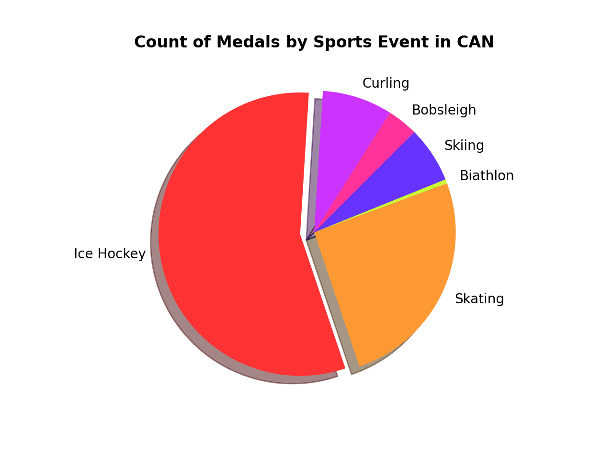
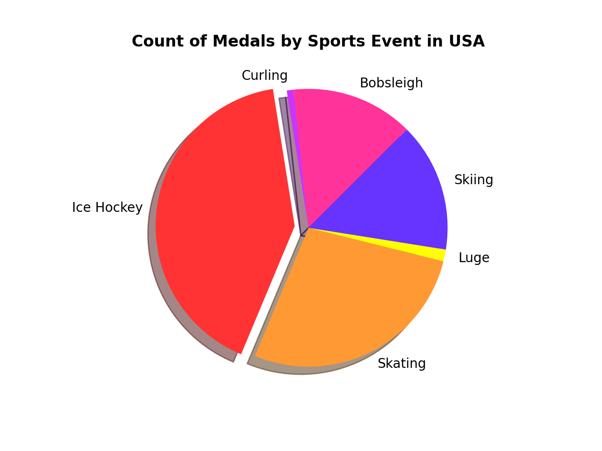
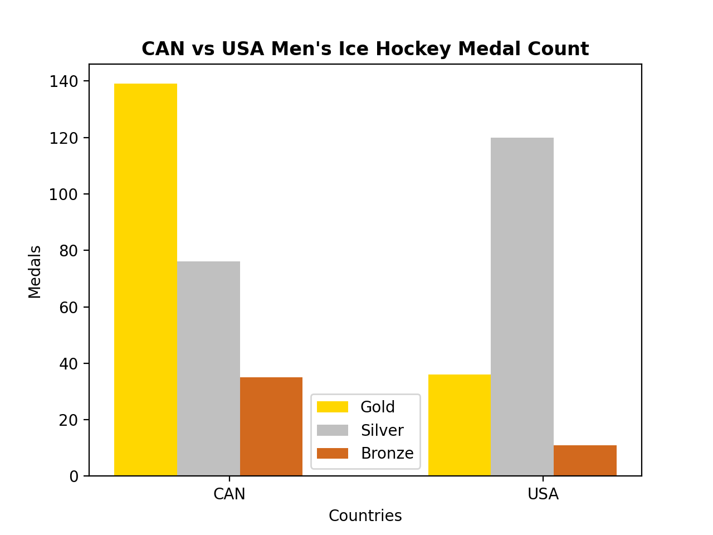
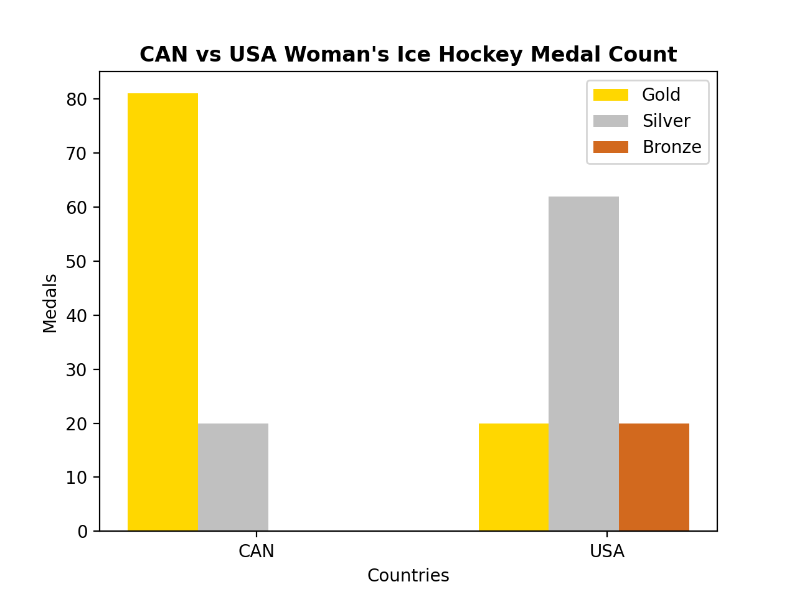

Main Image
Olympic Sports and Medals
(1896-2014)
Top 10 Medal Countries
Top 10 Medal Countries
The charts below show the total number of winter Olympic events in each country from 1894 to 2014. According to the data sheet, these data are provided by the IOC Research Reference Service and published by the Guardian's Datalog, and the countries that have won the most medals are USA, CAN, NOR, URS, FIN, SWE, GER, SUI, AUT, and RUS. However, a country with a large total number of gold medals was different from a country with a large total. For example, CAN, URS, USA, NOR, GER, SWE, RUS, AUT, SUI, and FIN. In particular, this table can see by looking at CAN and USA, the USA was the total number of medals was 653 with 28 more than CAN, but the CAN had the total number of gold medals was 148 more than USA. Thus, the USA has a larger total number of medals, but the CAN had number of gold medals has a higher, proving that the first place in the Olympic rankings from 1894 to 2014 is CAN.
 CAN and USA Medals Sport Type
CAN and USA Medals Sport Type
The pie chart below shows the number of USA and CAN medals in each sports event. Especially, both countries eared a lot in the Ice Hockey. The chart shows that CAN has won 56% of the medals, and USA has 41%.
 CAN and USA Ice Hockey Gender Medal Count
CAN and USA Ice Hockey Gender Medal Count
The bar charts below analyzed the USA and CAN, which won many medals in ice hockey, by gender. In men's ice hockey, the total number of medals was 250 for CAN and 167 for the USA, CAN be 83 more than the USA. In addition, the number of gold medal winners is 139 for CAN, 103 more than the USA, proving that CAN is the strongest country in ice hockey than the USA. On the other hand, the total number of medals in women's ice hockey is CAN for 102, the USA for 101, showing a similar number of medals. However, the CAN has won 61 more gold medals than the USA with 81. As a result, these tables prove that Canada is the best in ice hockey, both male and female.
 